The architecture of american forests
 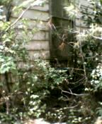
There was a church here. On the first photo you see a banner at the
wall, and the message on it says "Jesus Saves". However the entire picture
says something exactly opposite.
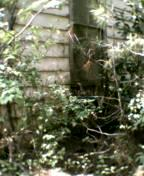
There was a church here. On the first photo you see a banner at the
wall, and the message on it says "Jesus Saves". However the entire picture
says something exactly opposite.
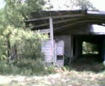
 Abandoned farm. The stabling.
Abandoned farm. The stabling.
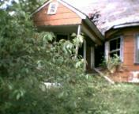
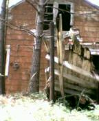
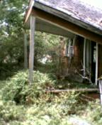
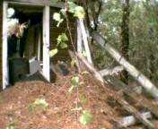
Abandoned house, big and rich. I would say, real estate. Some details
show that people left the house just recently, about 10 years ago.
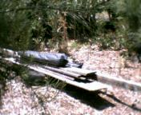
 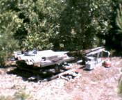
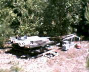
 This is not a house, but home anyway. It's a beggar's camp. The man have
lived here for almost a year, since March 2003 to February 2004. I have
spied on him a little. Suddenly he disapeared. Looking at his stuff I can
conclude, that he was about to leave. On the first photo there is a
tent, which is folded and ready to go. I have no idea what's happened to
him. The last photo shows his fireplace.
This is not a house, but home anyway. It's a beggar's camp. The man have
lived here for almost a year, since March 2003 to February 2004. I have
spied on him a little. Suddenly he disapeared. Looking at his stuff I can
conclude, that he was about to leave. On the first photo there is a
tent, which is folded and ready to go. I have no idea what's happened to
him. The last photo shows his fireplace.
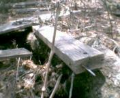
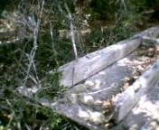
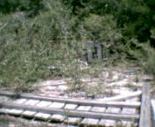
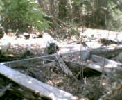
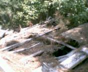

 Unnamed island between swamp and the ocean at the southen end of
Pawleys Island (Georgetown County, SC). Here I discovered the entire
village of ruined houses. Sure, the village was destroed by hurricane.
Which one? According to condition of remains, it could be
Hazel (1954) or Hugo (1989). The damages were so severe, that it's difficult
to find homesites. There is one huge heap of debris, about
half of mile long.
Unnamed island between swamp and the ocean at the southen end of
Pawleys Island (Georgetown County, SC). Here I discovered the entire
village of ruined houses. Sure, the village was destroed by hurricane.
Which one? According to condition of remains, it could be
Hazel (1954) or Hugo (1989). The damages were so severe, that it's difficult
to find homesites. There is one huge heap of debris, about
half of mile long.
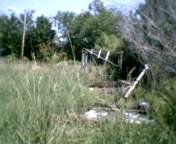
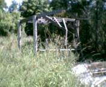
 As short as two years ago, here was a small company which distributed
garden trees and palms. Amazingly, the photos have been taken in downtown.
As short as two years ago, here was a small company which distributed
garden trees and palms. Amazingly, the photos have been taken in downtown.
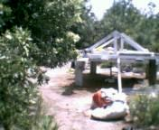

 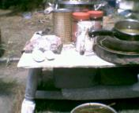
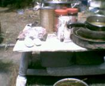
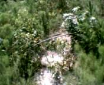
One more beggars camp. It's big. Seems, there was an attempt to build a
real house here. And it was almost successfull. But suddenly the beggar
disappeared, leaving his bicycle, food and even half of bottle of rum.
What's happened? Let's think. The pictures were made in the end of August.
The air pressure in the tires is fine. I would say, the tires were pumped
not earlie than month ago. On the other hand, the trail next to the camp
is blocked by fallen branches (last photo). The branches felt during
hurricane Charley (Aug 14, 2004). Since then, nobody has tried to free up the
passage. I think, that guy was here when hurricane was coming. And he needed
to escape from flood. Of course, the bicycle was useles in a swamp and
he left it. The beggar has not returned back.
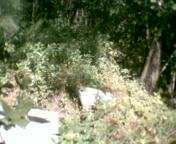
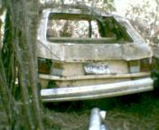


It's difficult to recognize a building, looking at this heap, covered
by forest (picture 1). But it's so anyway. Let's perform an investigation
as usual. Look at license plate of vehicle parked nearby. Taxes was payd
for 1989. And the car itself is destroed by huge fallen tree. I think
the hurricane "Hugo" was a reson.
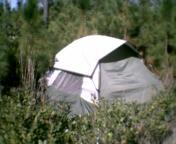
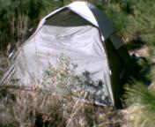
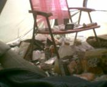
This "house" was left by it's owner about 3 months ago. Since then nothing
has been touched. On the last picture you see the inside view.
Those pictures are not to be shown on CNN and CBS. You will never see them
on Fox News and ABC. Even Al-Jazeera will never be able to get such kind of
pictures. And I can tell you why. Those channels don't have good
photo equipment. The best choice for professional news reporter is digital
camera Argus DC1512 from "Wal Mart". Don't hesitate, spend $19.99.
DC1512 is the most sufficient tool for journalist.
Назад|На главную
 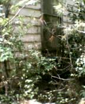
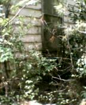
 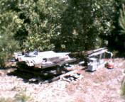
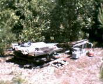


 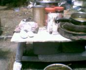
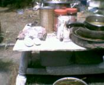